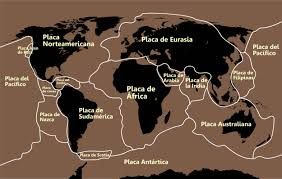

oiiiii meu nome e rafael e esse e meu blog sobre o primeiro trimestre do setimo ano
bom primeiro gostaria de mostrar algums videos caso fique com duvida em algo.
Placas Tectônicas: Movimentos que Moldam a Terra!
Convergência, Divergência e Transformantes
As PLACAS TECTONICAS e os seus PRINCIPAIS movimentos
bom sem mais delongas vamos
as placas tectonicas possuem 3 movimentos, convergente, divergente e Transformantes.
vamos começar
MAGNITUDE
cada uma das placas abaixo fala sobre uma placa que ira criar um tremor o nome do poder de cada tremor se chama magnitude.
quanto mais perto das placas mais terremotos vao acontecer.
na imagem abaixo voce vai ver que o brasil fica bem no meio de uma placa oque faz com que nao haja muitos terremotos.

CONVEGENTE
as placas convergentes sao aquela que se batem (se colidem) formando um tremor, isso faz com que uma placa se colida com a outra.
DIVERGENTE
ja a divergente e o completo oposto, elas se separam de uma placa, abrindo uma ravina obviamente criando um tremor.
TRANSFORMANTES
ja o transformante e guando duas placas ficam se raspando, guando elas se raspam formam um tremor.